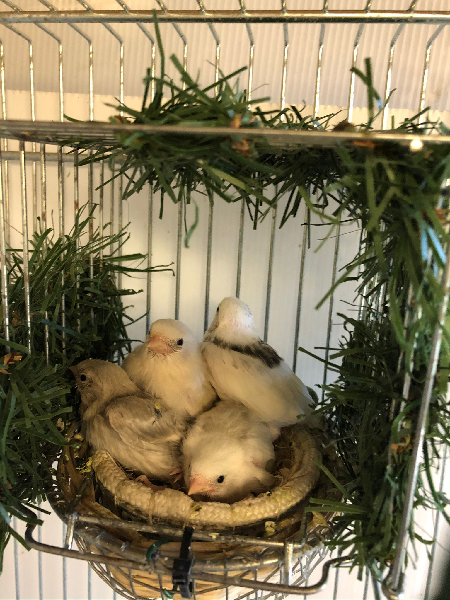
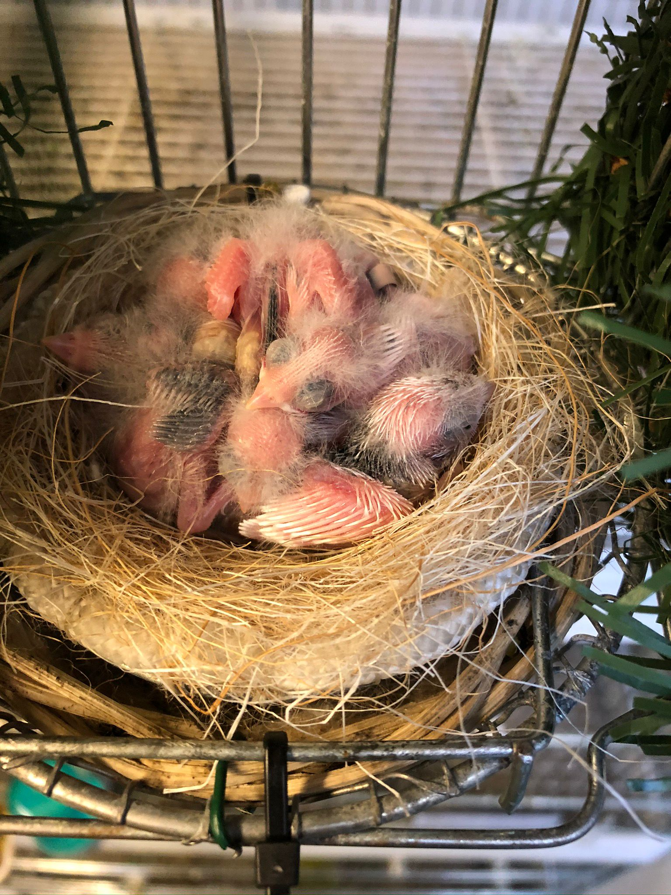
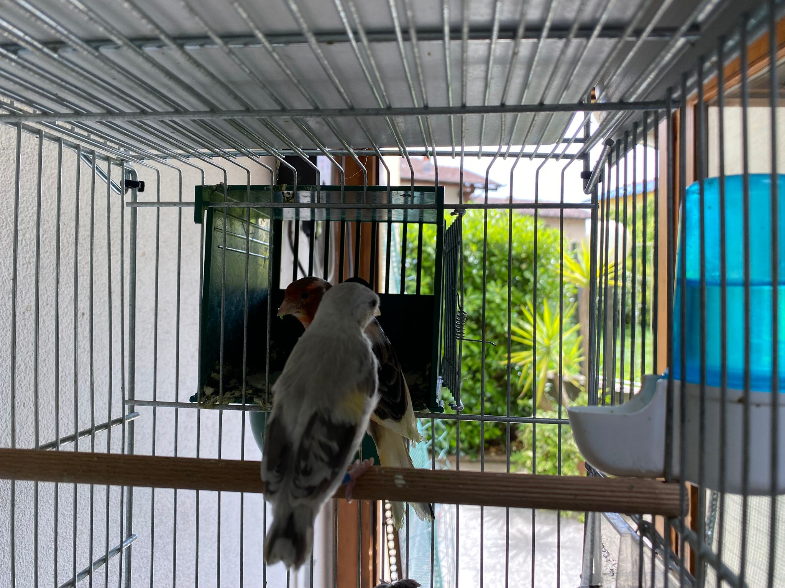
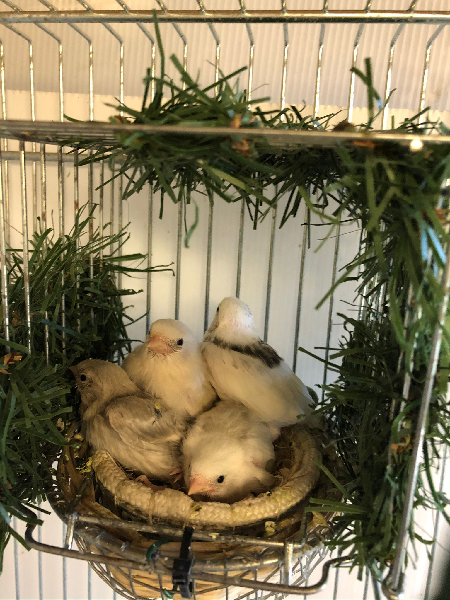
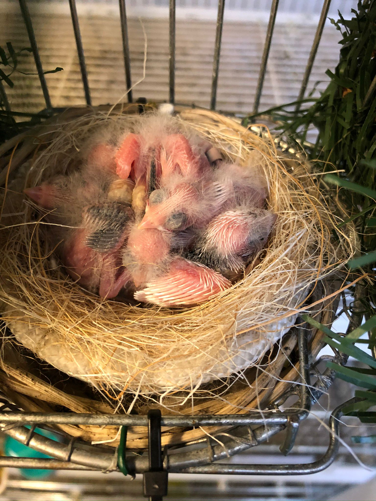
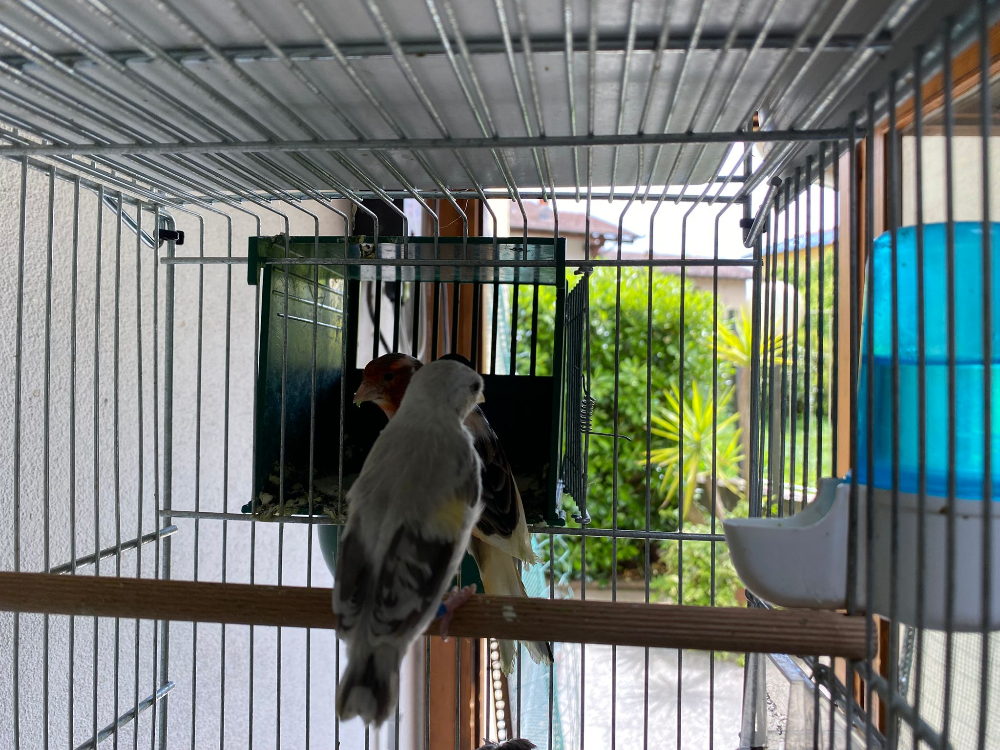

Novembre 2025
Esposizione
Partecipazione alla mostra ornitologica di [Città]
Alcuni organetti cabaret dell’allevamento di Gravedona hanno partecipato alla mostra di [Nome mostra / città]. Un’ottima occasione per confrontarsi con altri allevatori e mostrare la qualità dei soggetti cresciuti sulle rive del Lago di Como.